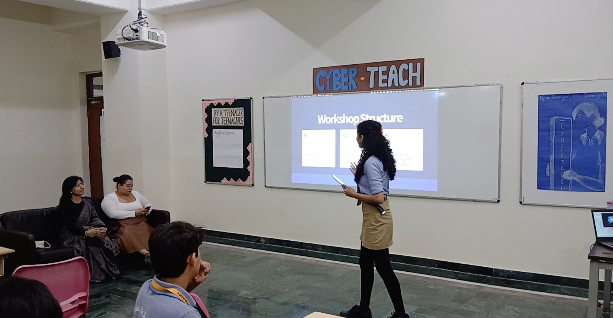

DIGITAL RIGHTS · FESTIVAL OF HOPE 2026
Cyber
Teach
A student-led initiative empowering teenagers to become Digital Rights Ambassadors and build safer digital communities.

CYBERTEACH 2026
Know your
rights.
Protect your space.
CyberTeach is a student-led initiative that empowers teenagers with the knowledge and digital tools needed to navigate the online world safely.
Through expert-led workshops, participants explore cybersafety, digital rights and the legal knowledge required to recognise, prevent and report online harassment.
The initiative aims to empower students to lead change and contribute towards safer digital communities.
CYBERTEACH · PROGRAMME
Learn.
Discuss.
Lead.
Opening Speech
Samaira Singh
3 Threats in Cyberspace
An expert-led session exploring key threats and challenges in cyberspace.
Ms. Pooja Malhotra
Recourse, Reporting, and What Follows
A session exploring recourse, reporting and what follows when issues arise in digital spaces.
Ms. Avaantika Chawla
Becoming a Digital Rights Ambassador
A student-led session focused on becoming a Digital Rights Ambassador.
Moderated by Samaira Singh
EXPERTS
Learn from
the experts.
CyberTeach brings together experts to help students better understand cybersafety, digital rights and the realities of navigating the online world.
Honorariums / mementos will be arranged for the two participating experts.
DIGITAL RIGHTS AMBASSADOR
Learn.
Lead.
Make a difference.
CyberTeach aims to empower participants to become Digital Rights Ambassadors.
Participants will gain knowledge and tools that can help them contribute towards safer digital communities.
INDIVIDUAL QUIZ
Put your
knowledge to the test.
Individual Competition
The quiz will be completed individually by each participant.
Workshop Knowledge
Participants will apply the knowledge developed through the CyberTeach experience.
Digital Awareness
The experience focuses on building awareness around digital rights, cybersafety and online responsibility.
PARTICIPATION
Bring your
curiosity.
Eligibility
Open to students in Grades 6–12.
School Limit
Each school may register a maximum of four participants.
Format
Expert-led workshop followed by an individual quiz.
RECOGNITION
Become a
Digital Rights Ambassador.
Certificate of participation
Participants will receive a certificate.
CYBERTEACH 2026
Build a safer
digital world.
Step into the role of a responsible digital citizen and future leader. CyberTeach challenges students to think critically about the digital world, understand their rights online and make informed decisions about technology.
Grades 6–12 · Maximum 4 participants per school
Digital rights · Cybersafety · Digital responsibility · Online decision-making · Leadership